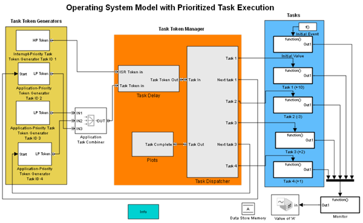
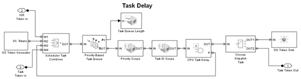
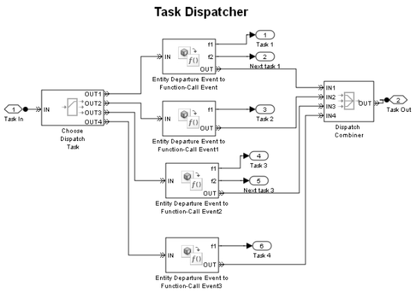

Operating System with Prioritized Task Execution
Contents
Overview
This model demonstrates the scheduling and execution of tasks in a multitasking operating system. It not only illustrates the aspect of task preemption but also shows how to simulate the prioritization of the time-critical and non-time-critical parts of a process using dependent tasks.
Structure of the Model
Task tokens are generated by the subsystems in the Task Token Generators section of the model. These tokens spend time in the Task Delay subsystem and then advance to the Task Dispatcher subsystem. The Task Dispatcher subsystem generates function calls that invoke task subsystems in the Tasks section of the model and generate dependent tasks.
Task Token Generators
Each kind of task has a token generator subsystem in the Task Token Generators section of the model. The presence of the Start input port indicates that one kind of task depends on the completion of another kind of task.
Each token carries data in these attributes:
- PriorityAttributeName - Task priority, with smaller numbers representing higher priorities
- TaskExecTime - Time to execute the task, excluding delays due to other tasks
- TaskID - Task identifier, which assumes a value from 0 to 4.
Each value of TaskID represents a particular type of task.
- 0 = Idle task (generated in Task Delay subsystem)
- 1 = Interrupt-priority task
- 2 = Application-priority task that depends on completion of Task 1
- 3 = Application-priority task
- 4 = Application-priority task that depends on completion of Task 3
Task Delay Subsystem
Tokens wait in a queue in ascending priority and then advance to the server block labeled CPU Task Delay. A higher priority task can preempt a lower priority task. Upon preemption, the lower priority task records its residual execution time and returns to the queue.
At T=0, the OS Token Generator subsystem generates the idle task. The idle task has infinite duration and lowest priority. When the idle task is being served, it indicates that there is no task currently executing.
Task Dispatcher Subsystem
Using TaskId, the Task Dispatcher routes each task to the appropriate Entity Departure Event to Function-Call Event block. The block generates one or two function calls that
- Execute the appropriate function-call subsystem representing the action performed in that task. In this model, the actions are arithmetic operations on a signal A, but in your own models the actions can be more complex.
- Model dependent tasks, if applicable. For example, execution of Task 2 depends on completion of Task 1. Notice that the function call at the Next task 1 output port connects to the Start input port of the Application-Priority Token Generator Task ID 2 block.
Results and Displays
The model include scopes that show these simulation statistics:
- Priority of the current task as shown in plot Priority Value for Tasks.
- Task ID of the current task as shown in plot Present Task ID.
- Average length of the task queue as shown in plot Task Queue Length.
- Value of A as the tasks manipulate it as shown in plot Value of 'A'
Experimenting with the Model
You can introduce randomness by making one or more of these changes:
- Make the task execution time random by changing parameters of the Event-Based RNG Task Time blocks in the task token generator subsystems.
- Make the arrival of interrupt or application tasks random by changing the Distribution parameter in the Time-Based Entity Generator block in the task token generator subsystem for Task 1 or Task 3, respectively.